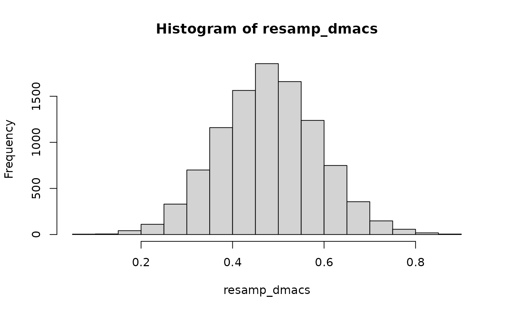

library(pinsearch)
library(lavaan)
#> This is lavaan 0.6-19
#> lavaan is FREE software! Please report any bugs.
set.seed(1131)Effect Size for Noninvariance
mod <- "
visual =~ x1 + x2 + x3
textual =~ x4 + x5 + x6
speed =~ x7 + x8 + x9
"
# Output the final partial invariance model, and the noninvariant items
ps1 <-
pinSearch(mod,
data = HolzingerSwineford1939,
group = "school", type = "residuals",
effect_size = TRUE
)
ps1
#> $`Partial Invariance Fit`
#> lavaan 0.6-19 ended normally after 64 iterations
#>
#> Estimator ML
#> Optimization method NLMINB
#> Number of model parameters 66
#> Number of equality constraints 25
#>
#> Number of observations per group:
#> Pasteur 156
#> Grant-White 145
#>
#> Model Test User Model:
#>
#> Test statistic 147.260
#> Degrees of freedom 67
#> P-value (Chi-square) 0.000
#> Test statistic for each group:
#> Pasteur 79.438
#> Grant-White 67.823
#>
#> $`Non-Invariant Items`
#> group lhs rhs type
#> 1 1 x3 intercepts
#> 2 1 x7 intercepts
#>
#> $effect_size
#> x3-visual x7-speed
#> dmacs 0.4866004 0.4161171Confidence Intervals with Resampling
Monte Carlo Methods
# Extract the parameter estimates for dmacs input
lav_free <- lavInspect(ps1[[1]])
# Index of the input parameters (item 3)
input_ind <- c(
lav_free[[1]]$lambda[3, 1],
lav_free[[1]]$nu[3, 1],
lav_free[[2]]$nu[3, 1],
lav_free[[1]]$theta[3, 3]
)
input_coef <- coef(ps1[[1]])[input_ind]
# Wrapper for computing dmacs with the input
my_dmacs <- function(x) {
dmacs(
intercepts = matrix(x[2:3]),
loadings = matrix(x[1], nrow = 2),
uniqueness = matrix(x[4], nrow = 2),
ns = c(156, 145)
)
}
# Note the effect size is slightly different
# using implied SD
my_dmacs(input_coef)
#> Pooled item SD is computed based on the input parameters
#> [,1]
#> dmacs 0.4794302
# Resample coefficients
num_resamp <- 10000
resamp_coef <- MASS::mvrnorm(
n = num_resamp,
mu = input_coef,
Sigma = vcov(ps1[[1]])[input_ind, input_ind]
)
# Resampled distribution of dmacs
resamp_dmacs <- apply(resamp_coef, 1, my_dmacs)
hist(resamp_dmacs)
Bias correction
# Estimate bias
bias <- mean(resamp_dmacs) - my_dmacs(input_coef)
#> Pooled item SD is computed based on the input parameters
# Bias corrected dMACS
my_dmacs(input_coef) - bias
#> Pooled item SD is computed based on the input parameters
#> [,1]
#> dmacs 0.4794864Confidence Intervals
Nonparametric Bootstrap
boot_dmacs <- bootstrapLavaan(ps1[[1]], R = 1000, FUN = pin_effsize)
# Bias
boot_bias <- colMeans(boot_dmacs, na.rm = TRUE) - ps1$effect_size
# Bias corrected dMACS
ps1$effect_size - boot_bias
#> x3-visual x7-speed
#> dmacs 0.4748794 0.4122325
# 95% Percentile CI
boot::boot.ci(
structure(list(t0 = ps1$effect_size,
t = boot_dmacs,
R = 1000, class = "boot")),
type = c("norm", "basic", "perc")
)
#> BOOTSTRAP CONFIDENCE INTERVAL CALCULATIONS
#> Based on 1000 bootstrap replicates
#>
#> CALL :
#> boot::boot.ci(boot.out = structure(list(t0 = ps1$effect_size,
#> t = boot_dmacs, R = 1000, class = "boot")), type = c("norm",
#> "basic", "perc"))
#>
#> Intervals :
#> Level Normal Basic Percentile
#> 95% ( 0.2458, 0.7040 ) ( 0.2438, 0.6855 ) ( 0.2877, 0.7294 )
#> Calculations and Intervals on Original Scale